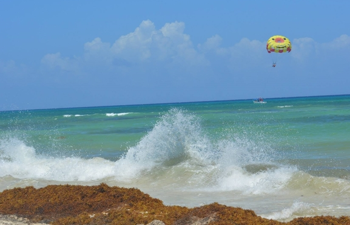
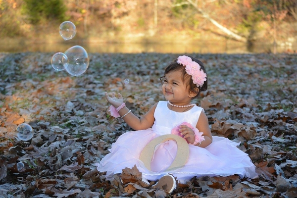
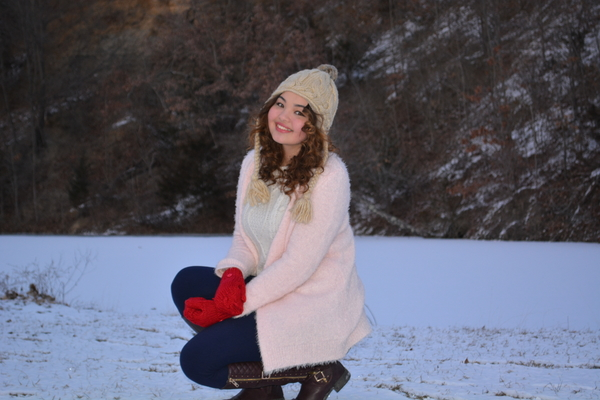

I love capturing moments!! Yeah, you guessed it right, I love Photography. Not being a professional photographer...I have still managed to click some great pictures. Have a look into the images I captured.
Playa Del Carmen, Mexico
♦ I took this picture in May 2015, when I went to Mexico with my husband for vacation. This is one of the biggest beach of Playa Del Carmen, a city in Mexico. I was trying to capture the landing parachute and the waves at the same time. Luckily, I was able to capture both, waves and the landing parachute at the same time.
Fall Photoshoot of Niece - Kanvi @ Missouri
♦ This cute little baby girl in the picture is my niece. Her name is Kanvi. I did her photshoot during fall when she was almost about to turn one year old in September 2015. This picture was taken at the park in Moberly, Missouri; that is where I am from.
My Best Friend - Guzel's Winter Photoshoot @Missouri
♦ This beautiful girl is my best friend, Guzel. She is from Turkmenistan. She is a foreign student who came to United States to get her bachelor's in Journalism. This picture of her was taken by me in December 2016 at University of Missouri - Columbia, Missouri.
My Favorite Place